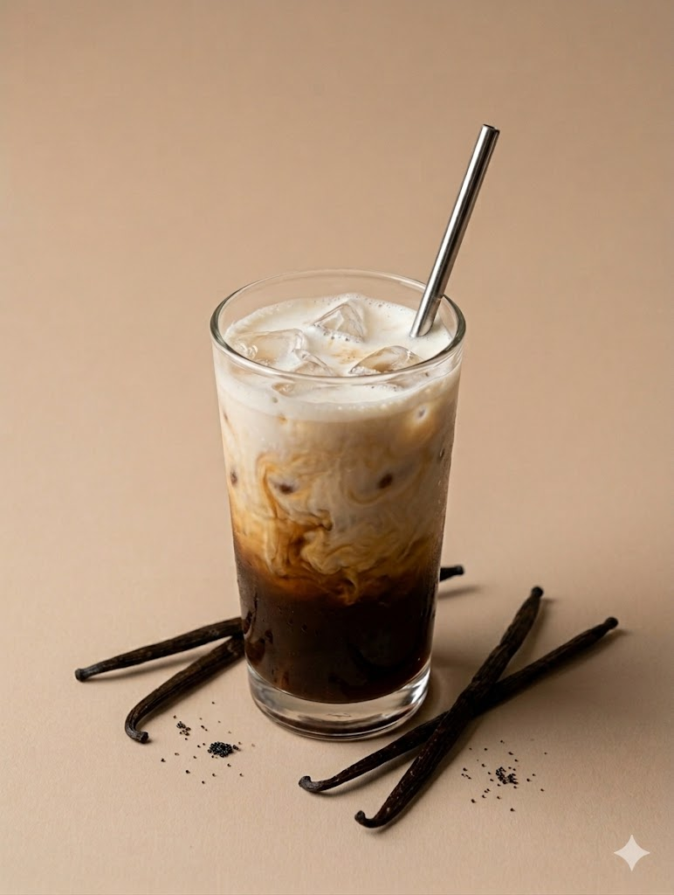
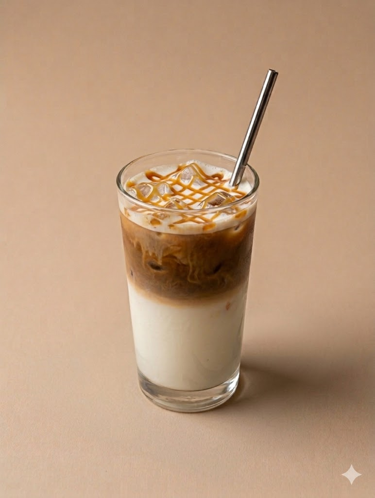
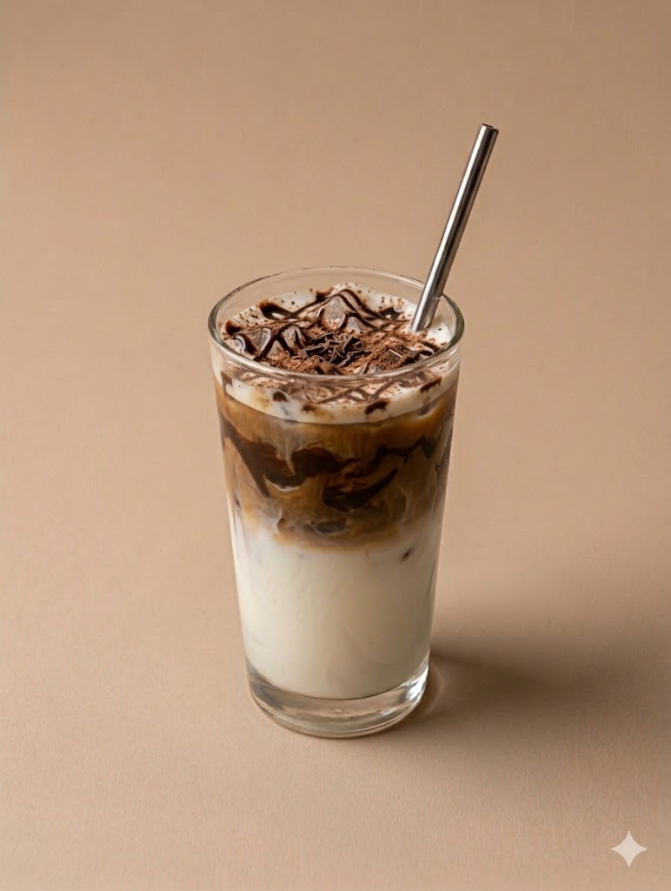
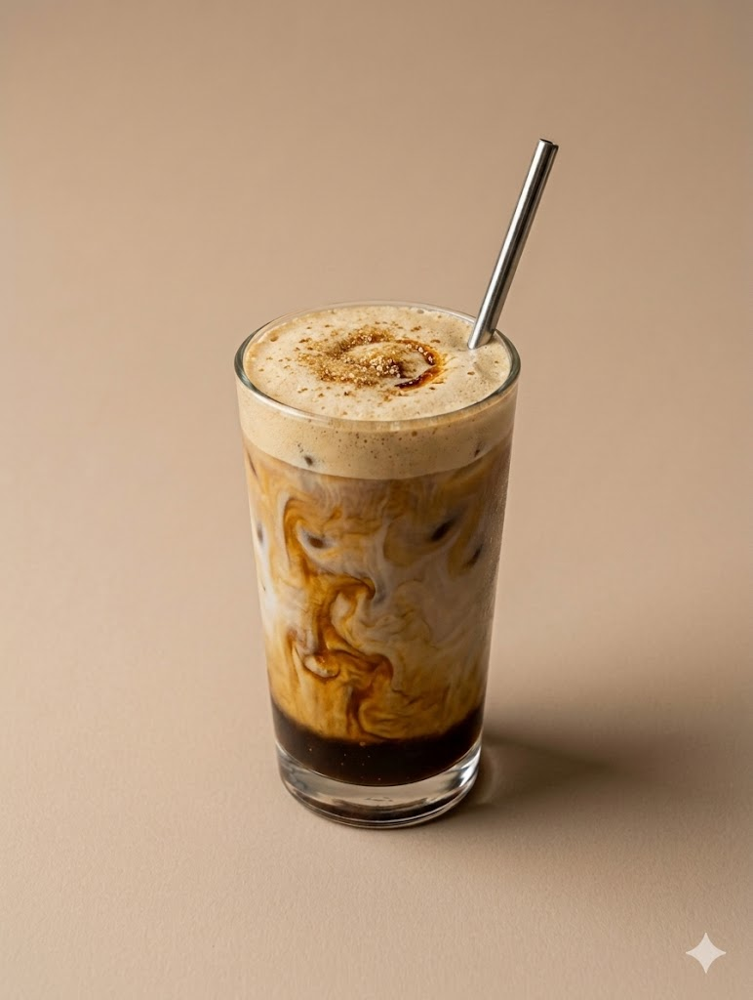

ICED COFFEE RECIPES

Vanilla Iced Latte
Ingredients
- 1 shot espresso
- 1 cup milk
- 1 tablespoon vanilla syrup
- Ice cubes
Directions
Put a spoon of vanilla syrup into a small cup and brew a double shot of espresso over it. Add the amount of sugar you want and stir until it dissolves into the espresso. Fill another cup with ice and pour in your milk of choice. Slowly pour the espresso mixture over the milk and ice, then stir before drinking.

Caramel Iced Latte
Ingredients
- Double shot espresso
- 2 tablespoons caramel syrup
- Milk
- Ice cubes
Directions
Drizzle caramel sauce into the bottom and sides of your cup. Fill the cup with ice and pour in your milk of choice. Brew a double shot of espresso over a tablespoon of carmel and slowly pour it over the milk to create layers. Add extra caramel on top if desired and stir before drinking.

Mocha Iced Latte
Ingredients
- Double shot espresso
- 1 cup milk
- 2 tablespoons chocolate syrup
- Ice cubes
Directions
Add chocolate syrup into a small cup and brew a double shot of espresso over it. Stir until the chocolate melts into the espresso. Fill a cup with ice and pour in your milk of choice. Slowly pour the espresso mixture over the milk and stir before drinking.

Brown Sugar Iced Latte
Ingredients
- Double shot esspresso
- 1 tablespoon brown suagr
- 1 cup milk
- Ice cubes
Directions
Add brown sugar into a small cup and brew a double shot of espresso over it. Stir well so the brown sugar completely dissolves into the hot espresso. Fill a cup with ice and pour in your milk of choice. Slowly pour the espresso mixture over the milk and stir before serving.